<style>
  :root {
    --color-light: #fff;
    --color-dark: #222;
    --color-highlight: #0ff;
    --color-lowlight: #eee;
  }

  *,
  *::before,
  *::after {
    box-sizing: border-box;
    user-select: none;
    -webkit-user-select: none;
  }

  body {
    background: var(--color-light);
    color: var(--color-dark);
    margin: 0;
    font-family: sans-serif;
    font-weight: 200;
  }

  .topbar {
    position: fixed;
    left: 0;
    top: 0;
    right: 0;
    z-index: 2;
    height: 2.4rem;
    background-color: #222;
    overflow: hidden;
    display: flex;
    justify-content: space-between;
    align-items: center;
    padding: 0 .7rem;
    color: #efefef;
    font-size: .9rem;
  }

  .topbar section {
    display: flex;
    align-items: center;
  }

  .topbar select,
  .topbar input,
  .topbar button {
    font: inherit;
    appearance: none;
    border: none;
    background: none;
    color: #efefef;
  }
</style>

<section class="topbar">
  <wunder-vandelay></wunder-vandelay>
  <section class="toolbar">
    <wunder-history></wunder-history>
    <wunder-tool type="brush" shortcut="b" description="Brush"></wunder-tool>
    <wunder-tool type="eraser" shortcut="e" description="Eraser"></wunder-tool>
    <wunder-tool type="line" shortcut="l" description="Line"></wunder-tool>
    <wunder-tool type="ellipse" shortcut="c" description="Ellipse"></wunder-tool>
    <wunder-tool type="rectangle" shortcut="r" description="Rectangle"></wunder-tool>
    <wunder-palette sets="selectedColor" description="Color"></wunder-palette>
  </section>
  <section class="scenebar">
    <wunder-pip></wunder-pip>
    <!-- <wunder-grid></wunder-grid> -->
    <wunder-zoom></wunder-zoom>
    <wunder-palette sets="backgroundColor"></wunder-palette>
  </section>
</section>

<wunder-workspace></wunder-workspace>

<style>
  .toolbar-button {
    width: 1.5rem;
    height: 1.5rem;
    display: inline-flex;
    justify-content: center;
    align-items: center;
    overflow: hidden;
    position: relative;
    border-radius: .2rem;
    margin-right: .7rem;
    border: none;
    background: none;
  }

  .toolbar-button--compact {
    margin-right: .2rem;
  }

  .toolbar-button img {
    transform: scale(.5);
    opacity: .8;
    -ms-interpolation-mode: nearest-neighbor;
    image-rendering: -moz-crisp-edges;
    image-rendering: -webkit-optimize-contrast;
    image-rendering: pixelated;
  }

  .toolbar-button:hover,
  .toolbar-button.toolbar-button--active,
  .toolbar-button:focus {
    background-color: #474747;
  }

  .toolbar-button:hover img,
  .toolbar-button.toolbar-button--active img,
  .toolbar-button:focus img {
    opacity: 1;
  }
</style>

<template id="tool-tmp">
  <input type="radio" name="tool" hidden/>
  <label class="toolbar-button tool"></label>

  <style>
    [name=tool]:hover + .tool,
    [name=tool]:focus + .tool,
    [name=tool]:checked + .tool {
      background-color: #474747;
    }

    [name=tool]:checked + .tool img {
      opacity: 1;
    }
  </style>
</template>

<template id="vandelay-tmp">
  <section class="menubar">
    <label class="toolbar-button toolbar-button--compact" title="Load">
      
      <input type="file" accept=".wunder" hidden data-type="load"/>
    </label>
    <button class="toolbar-button toolbar-button--compact" data-type="save" title="Save"></button>
    <button class="toolbar-button toolbar-button" data-type="export" title="Export image"></button>
    <input data-type="title"/>
  </section>
</template>

<template id="history-tmp">
  <button class="toolbar-button toolbar-button--compact" data-type="undo" title="Undo"></button>
  <button class="toolbar-button" data-type="redo" title="Redo"></button>
</template>

<template id="pip-tmp">
  <button class="toolbar-button toolbar-button" title="Preview"></button>
  

  <style>
    #pip {
      position: fixed;
      -ms-interpolation-mode: nearest-neighbor;
      image-rendering: -moz-crisp-edges;
      image-rendering: -webkit-optimize-contrast;
      image-rendering: pixelated;
      border: 1px solid var(--color-dark);
    }

    #pip[data-position="right-bottom"] { right: 1rem; bottom: 1rem; }
    #pip[data-position="right-top"] { right: 1rem; top: 3.5rem; }
    #pip[data-position="left-bottom"] { left: 1rem; bottom: 1rem; }
    #pip[data-position="left-top"] { left: 1rem; top: 3.5rem; }
  </style>
</template>

<template id="grid-tmp">
  <button class="toolbar-button" title="Grid"></button>

  <style>
    .container.grid::after {
      content: '';
      position: absolute;
      top: 0;
      left: 0;
      bottom: 0;
      right: 0;
      background-image:
        linear-gradient(#efefef 1px, transparent 1px),
        linear-gradient(90deg, #efefef 1px, transparent 1px);
      background-size: var(--scale) var(--scale);
      background-position: var(--grid-correction);
    }
  </style>
</template>

<template id="tweaks-range-tmp">
  <label>
    <input type="range"/>
    <span></span>
  </label>
</template>

<template id="tool-palette-tmp">
  <div class="tool tool--palette">
    <input type="color"/>
  </div>

  <style>
    .tool--palette input {
      border: none;
      background: none;
      width: 1.2rem;
      height: 1.4rem;
      padding: 0;
    }
  </style>
</template>

<template id="workspace-tmp">
  <div class="container">
    <section class="workspace">
      
    </section>
  </div>

  <style>
    .container {
      position: absolute;
      left: 0;
      top: 0;
      width: 100vw;
      height: 100vh;
      background: var(--color-light);
      display: flex;
      justify-content: center;
      align-items: center;
      cursor: crosshair;
    }

    .workspace {
      background: var(--color-light);
      box-shadow: 0 0 1rem rgba(0, 0, 0, .5);
    }

    .workspace img {
      pointer-events: none;
      -ms-interpolation-mode: nearest-neighbor;
      image-rendering: -moz-crisp-edges;
      image-rendering: -webkit-optimize-contrast;
      image-rendering: pixelated;
    }
  </style>
</template>

<script type="module" src="./src/App.mjs"></script>
